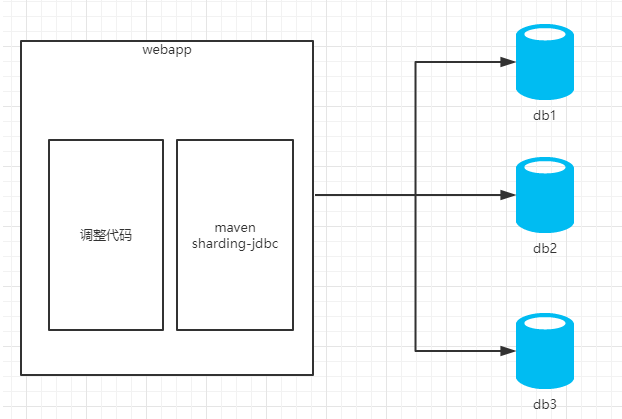

从字面上简单理解，就是将原本存储在一个库的数据分块存储在多个库上，将原本存储在一个表的数据分块存储在多个表里面。
数据的切分根据其切分规则的类型，可以分为如下两种切分模式。
这样操作的优点：
拆分后业务清晰，拆分规则明确。
系统之间进行整合或扩展很容易。
按照成本、应用的等级、应用的类型等将表放到不同的机器上，便于管理。
便于实现动静分离、冷热分离的数据库表的设计模式。
数据维护简单。
缺点：
业务表多样，SQL语句复杂。水平（横向）切分：根据表中数据的逻辑关系，将同一个表中的数据按照某种条件拆分到多台数据库（主机）上。与垂直切分对比，水平切分不是将表进行分类，而是将其按照某个字段的某种规则分散到多个库中，在每个表中包含一部分数据，所有表加起来就是全量的数据。
比如有一个用户表，单张表的记录条数达到1亿条，这样在进行查询，插入，更新操作的时候，速度将非常慢，那我们可以将这些数据分配到100个表里面，每个表的数据量就下来了，导致单表的容量不会太大，从而保证了单表的查询等处理能力。
我们通常将数据分配的原则称为分片规则，常见的分片规则有对用户的id取模。
注意：一定要好好决定分片规则，尽量选择不会变动的字段，如果选择区域，性别，年龄等字段，当用户修改这些信息的时候又要讲数据移动到其他数据库，这里面的逻辑也很头疼。
这样操作水平的优点如下：
单库单表的数据保持在一定的量级，有助于性能的提高。
切分的表的结构相同，应用层改造较少，只需要增加路由规则即可。
提高了系统的稳定性和负载能力。缺点如下：
切分后，数据是分散的，很难利用数据库的Join操作，跨库Join性能较差。
拆分规则难以抽象。
分片事务的一致性难以解决。
数据扩容的难度和维护量极大。数据库负载增大时的处理：随着我们的应用的用户量越来越大，访问量也随之提升，当他们提升到一定的量级之后，应用也就越来越慢。当然我们可以通过增大前端应用负载的方式来提升速度，但是直到有一天我们发现无论如何增大前端应用负载都不能提升速度，我们就逐步找到原因，是数据库的问题。因为数据库是存在性能瓶颈的，这是无法避免的。
MyCat:是一个中间件的第三方应用，使用mycat时不需要改代码。
我们在使用的时候，如果有多个库，我们在代码里面就只要写mycat对外的一个逻辑库信息就行，而数据库层面的配置，比如总共有多少个库，每个库里面的表，每个表的分片规则，这些都是在mycat里面配置，不需要修改代码信息。
具体的逻辑图如下：
Sharding JDBC:是一个jar包，使用sharding-jdbc时需要修改代码。
我们在使用的时候，需要引入sharding jdbc的jar包，在配置文件里面写明总共有多少个库，每个库里面的表，每个表的分片规则等信息。
具体的逻辑图如下：

如何选择中间件？
sharding-jdbc和mycat使用不同的理念，sharding-jdbc目前是基于jdbc驱动，无需额外的proxy，因此也无需关注proxy本身的高可用。Mycat 是基于 Proxy，它复写了 MySQL 协议，将 Mycat Server 伪装成一个 MySQL 数据库，而 Sharding-JDBC 是基于 JDBC 接口的扩展，是以 jar 包的形式提供轻量级服务的。
其实MyCAT很适合中小企业使用的。可以非常容易的实现数据库的读写分离和分库分表，反而对于大企业来说，都会自己开发适合自己的数据库中间层应用，比如sharding jdbc原来就是当当网内部的数据库中间件，后来开源出来的。